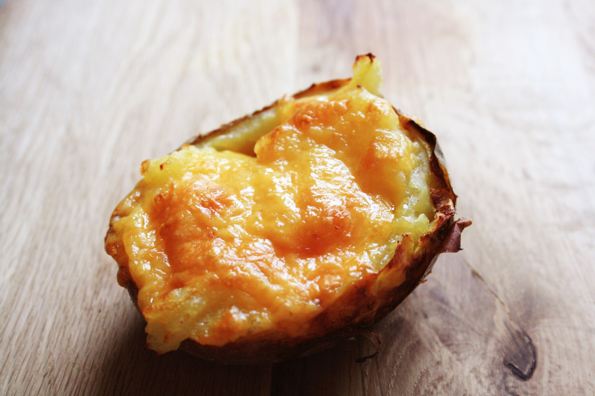

Keto Cups (Egg Breakfast Mini-Muffins) Recipe

Cook them up for a great Saturday morning or store them in the freezer for a quick weekday bite.
Description
These protein-packed breakfast cups are a low-carb solution for busy mornings. Baked in a muffin tin, they are customizable with your favorite vegetables, cheeses, and meats. They are portable, satisfying, and perfect for meal prep.
Instructions
Ingredients
- 6 large eggs
- 1/4 cup shredded cheddar cheese
- 1/4 cup bacon or sausage
- Salt and pepper to taste
Steps
- Preheat oven to 375F (190C)
- Whisk eggs with salt and pepper.
- Grease muffin tin and fille with meat of choice and cheese.
- Pour egg mixture over fillings.
- Bake 18-20 minutes until set.
Navigation